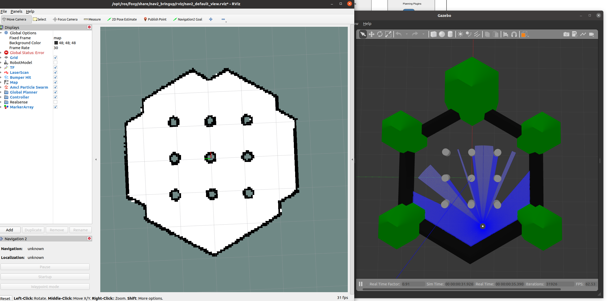

Navigation2
总览
这是一个致力于做出一个可以让移动机器人从点A安全的移动到点B的库。它也可以被应用在其他牵扯到机器人导航的应用中，比如跟随动态物体。在此过程中，他会完成动态路径规划，计算电机速度，避障以及结构恢复性行为。
Nav2使用行为树调用模块化服务来完成一个action。一个action可以被用于计算路径、控制工作、恢复或任何其他与导航相关的操作。他们每一个都是单独的节点，它通过ROS 的action 服务端与行为树（BT）通信。下面的图表将让你对Nav2结构有一个很好的初步了解。注意:控制器、计划器和恢复器的每个server上都可以有多个插件，并带有匹配的BT插件，这可以用来创建上下文导航行为。
Nav2的预期输入是符合REP-105的TF转换，如果使用静态Costmap层，则是一个地图源，一个BT XML文件，以及任何相关的传感器数据源。他会向电机提供有效的速度指令，目前支持差分驱动类型和全驱动类型。
目前的工具有：
加载，服务和存储地图（Map Server）
在地图上定位机器人（AMCL）
在障碍物周围规划从A到B的路径（Nav2 Planner）。
控制机器人沿路径移动（NAV2 Controller）
将传感器数据转换为世界的CostMap表示（Nav2 CostMap 2D）
使用行为树构建复杂的机器人行为（Nav2 Behavior Trees and BT Navigator）
在发生故障时计算恢复行为（Nav2 Recoveries）
遵循连续的航点（Nav2 Waypoint Follwer）
管理服务器的生命周期和watchdog（Nav2 Lifecycle Manager）
在插件中定义自己的的算法和行为（NAV2 Core）

我们提供了一套起始插件供大家使用。NavFn利用A*算法或者Dijkstra's算法来计算从一个地方到目标位置的最短路径。DWB会使用DWA算法来跟踪路径。一些恢复行为：waiting, spining, 清除costmaps。还有一些行为树插件来call这些服务和计算condition。最后，有一组RVIZ插件，用于与堆栈进行交互并控制生命周期，可以在导航插件上找到所有用户报告的插件列表。
下面是关于在Turtlebot 3 (TB3)如何安装和使用Nav2的文档，也包括和其他的机器人如何使用Nav，以及如何调整参数获得更好的性能，以及为更好的结果定制内部组件。
案例
设置环境变量
1
2export TURTLEBOT3_MODEL=waffle
export GAZEBO_MODEL_PATH=$GAZEBO_MODEL_PATH:/opt/ros/<ros2-distro>/share/turtlebot3_gazebo/models在同一个终端下
1
ros2 launch nav2_bringup tb3_simulation_launch.py

注意：在这里有两个错误需要修复一下：
Couldn’t Find Child Link[camera_rgb_frame]
找到相关文件的报错，删除关于camera_rgb_frame的内容
缺少相关dae文件
去这里下载
left_tire.dae和right_tire.dae到/opt/ros/foxy/share/turtlebot3_gazebo/models/turtlebot3_waffle/meshes下面
导航
打开了之后需要机器人是不知道自己在哪的，需要根据在gazebo中的位置，在Rviz中选择2D Pose Estimate，点击地图位置然后选择方向

在一次点击Navigation2 Goal，确定机器人需要达到的位置和方向，机器人开始移动